Breaking the 3DS
Introduction
Original 3DS
Released in 2011.
- Stereoscopic "3D" display
- CPU: 2x ARM11 MPCore (268MHz)
- GPU: DMP PICA
- RAM: 128MB FCRAM, 6MB VRAM
- 2nd CPU: ARM946
- Backwards compatible with DS games
New 3DS
Released in 2014/2015.
- "Super Stable" Stereoscopic "3D" display
- CPU: 4x ARM11 MPCore (Up to 804MHz)
- GPU: DMP PICA
- RAM: 256MB FCRAM, 6MB VRAM
- 2nd CPU: ARM946
- Backwards compatible with DS games
Hardware overview
Hardware overview
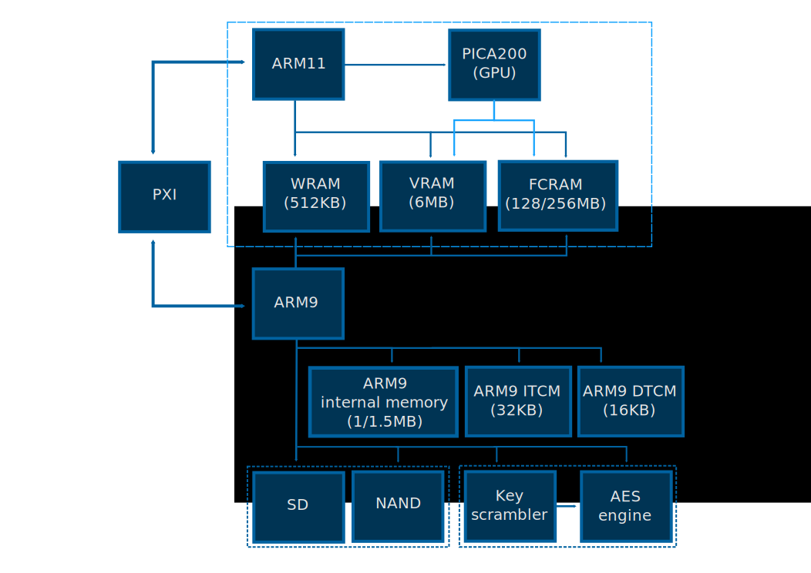ARM11 overview
ARM11 overview
ARM11 overview
ARM11 overview
Hardware overview
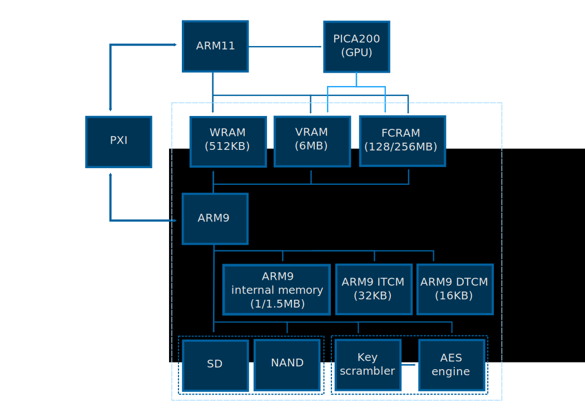ARM9 overview
ARM9 overview
ARM9 overview
ARM9 overview
ARM9 overview
Privilege levels (theory)
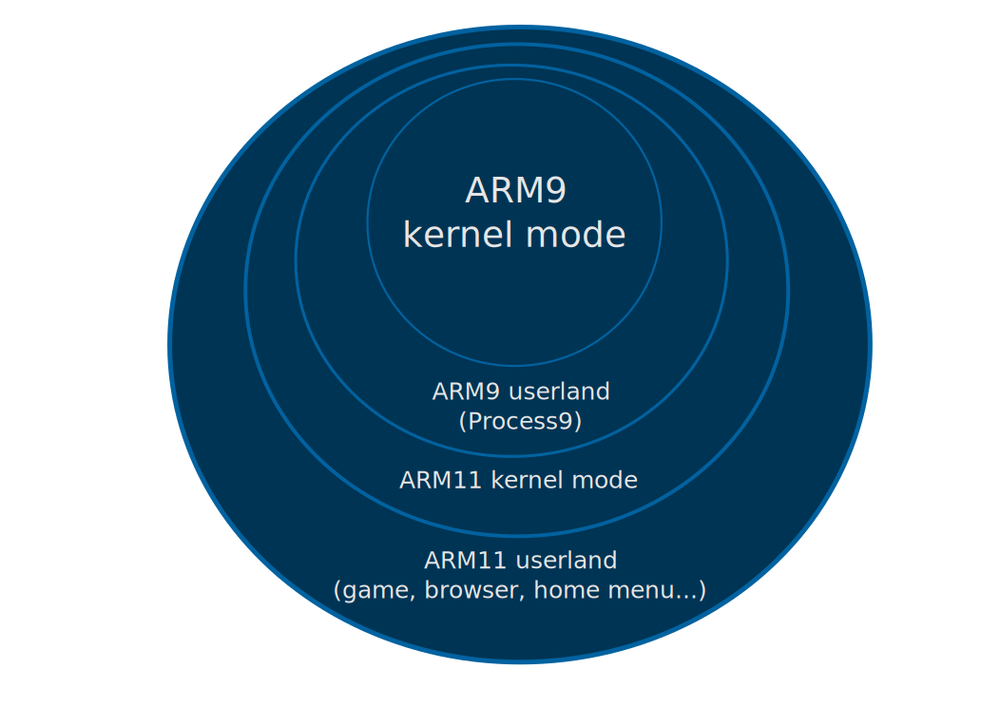Privilege levels (reality)
svc 0x7Bbic r1, sp, #0xff orr r1, r1, #0xf00 add r1, r1, #0x28 ldr r2, [r1] stmdb r2!, {sp, lr} mov sp, r2 blx r0 pop {r0, r1} mov sp, r0 bx r1
Privilege levels (theory)
Privilege levels (reality)
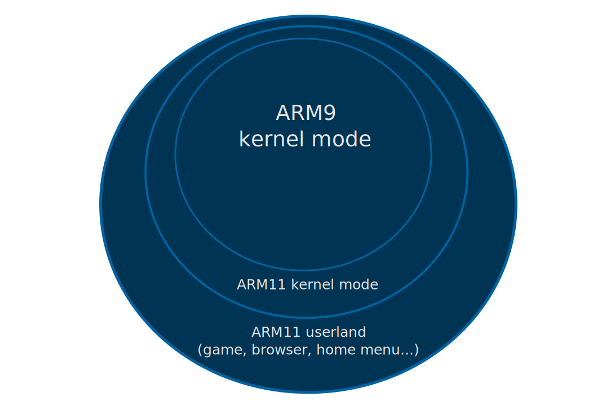Crypto
- Anything that can be signed is signed
- Anything that can be encrypted is encrypted
- Anything that can be made console/gamecard specific is
- Internal NAND
- All data stored on SD
- Savegames, extdata
- All of this is handled by the ARM9 with its secret keys
ARM11 Userland Exploitation
Entrypoint
- Strictly enforced Data Execution Prevention (DEP/NX)
- Existing pages are either R, RW or RX
- No way to reprotect or map new pages as RWX from userland
- No ASLR
⇒ savegame vulns are fair game - Encrypted and authenticated savegames
⇒ savegame vulns are not great as initial entrypoints
Thankfully...
A wild webkit appears
Entrypoint
- Webkit is used all over the place
- Internet browser
- Youtube application
- Miiverse applet
- ...
- Version in use is very old, with some patches
- Multiple bugs exploited by yellows8 and others
Entrypoint
- Cubic Ninja uses QR code to share user-made levels
- It also fails hard at parsing those user-made levels
Dealing with DEP
- Reminder : even with cubic ninja or webkit, we can't run our own code
- Obvious solution : ROP
- Build a fake stack that returns into code gadgets we need
-
.word ROP_POP_R0PC ; pop {r0, pc} .word dst ; r0 .word ROP_POP_R1PC ; pop {r1, pc} .word src ; r1 .word ROP_POP_R2R3R4R5R6PC ; pop {r2, r3, r4, r5, r6, pc} .word size ; r2 .word 0xDEADBABE ; r3 (garbage) .word 0xDEADBABE ; r4 (garbage) .word 0xDEADBABE ; r5 (garbage) .word 0xDEADBABE ; r6 (garbage) .word MEMCPY
Dealing with DEP
- ROP is annoying
- svcControlProcessMemory is not accessible from games/applications
- Dynamically linked libraries exist, but are signed
GPU
GPU
GPU
GPU
GPU
gspwn
- We can use the GPU to directly access parts of physical memory
- The physical memory layout is completely deterministic
- We can overwrite application .text, get code execution despite DEP
Sandbox
- We've bypassed DEP, but are limited to the current application's sandbox
- can only access its own savedata, likely can't access SD
- can only access its services and syscalls
- can't alter memory layout (number of executable pages...)
Sandbox escape
Sandbox escape
Sandbox escape
- GPU can access most of the SYSTEM region which contains :
- home menu (applet, runs in background)
- internet browser (applet, can run in background)
- NS (system module, "Nintendo Shell")
Sandbox escape
Sandbox escape
Sandbox escape
Sandbox escape
Sandbox escape
- The cutoff excluding the end of SYSTEM and all of BASE looks intentional
- Seems likely Nintendo knew about the possibility of misusing GPU DMA
- If so, they probably didn't realize the extent of the damage it can do
Sandbox escape
Sandbox escape
- GPU can't access interesting code sections, but it can access menu's heaps
- Taking it over is just a matter of hijacking an object
object: .word OBJECT_LOC + vtable - object ; pointer to manufactured vtable, and new sp .word ROP_POP_PC ; pc (pop {pc} to jump to ROP) vtable: ; also initial ROP .word ROP_POP_R4R5PC ; pop {r4, r5, pc} : skip pivot .word OBJECT_LOC + ropload_stackpivot - object + 0x1c ; r4 .word ROP_STACK_PIVOT ; stack pivot ; also r5 (garbage) rop: .word ROP_STACK_PIVOT ; ldmdavc r4, {r4, r5, r8, sl, fp, ip, sp, pc} ropload_stackpivot: .word 0, 0, 0, 0, 0, 0 .word LOADEDROP_BUFADR ; sp .word ROP_POP_PC ; pc
Sandbox escape
- Can't run code under home menu, but can ROP our way to success
- ns:s : power of life and death over processes
- Gives us SD access
- Lets us decrypt/dump any title
- Lets us access/overwrite all extdata
- We use this as the base for running homebrew
Homebrew launcher
- Run homebrew "service" in background under menu (written as ROP)
- "Service" handles running homebrew
- Kills current application
- Opens application with necessary permissions for target homebrew
- Takes over application using gspwn
- Sends some service handles to application (for SD access etc)
- "Service" handles events (home button, power button...)
Rom hacks
- We can run code under any app
- We can use this to modify commercial games !
- Launch app, take it over
- Load app's code onto heap
- Patch code
- (we can patch it to redirect data reads to SD card)
- gspwn code and jump to it
Secondary entrypoints
- We can run homebrew under any application
⇒ we can access any savegame - We can use this to install more convenient secondary entrypoints
Secondary entrypoints
- Menuhax, by yellows8 : exploits faulty theme handling code to run homebrew at startup
- Oot3dhax, by yellows8 : savegame exploit for "Ocarina of Time 3D"
- Ironhax : savegame exploit for "Ironfall : Invasion"
- ...hax : savegame exploit for "..."
What about NS ?
- NS is an attractive target
- Has am:u access, which lets us downgrade individual titles
- Has access to system module-specific system calls
- Is in a region we can partially mess with
- All code and data it uses is beyond the cutoff
- What if we could move them to be below the cutoff ?
What about NS ?
Original layoutWhat about NS ?
Kill instance of NSWhat about NS ?
Allocate data in SYSTEM region from menuWhat about NS ?
Launch a new instance of NSWhat about NS ?
gspwn itWhat about NS ?
- Of course, that can't work
- We need NS to launch NS :(
- We can't run multiple instances of the same title :(
- Fortunately, the 3DS has a "safe" mode
- Most system titles have a SAFE_MODE counterpart with a different ID
- pm won't run a SAFE_MODE title if its normal version is already running
- But for some reason...
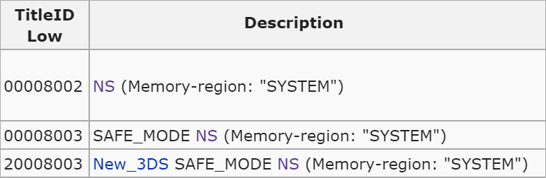
What about NS ?
- Of course, that can't work
- We need NS to launch NS :(
- We can't run multiple instances of the same title :(
- Fortunately, the 3DS has a "safe" mode
- Most system titles have a SAFE_MODE counterpart with a different ID
- pm won't run a SAFE_MODE title if its normal version is already running
- But for some reason...
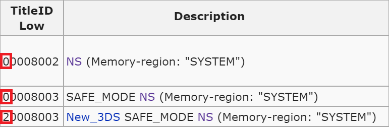
snshax
Allocate buffer, launch New3DS Safe NS (sns), gspwn itsnshax
- Gives us code execution under a system module !
- SVC 0x47, 0x48, 0x4A, 0x4B, 0x4C, 0x4D, 0x4E, 0x4F, 0x50, 0x51, 0x52, 0x53, 0x54, 0x55, 0x56, 0x57, 0x7C
- pm:app, ps:ps, am:u
- Downgrades for all !
- Runs in background
- N3DS-only
- For a similar userland privilege escalation attack, look up rohax
ARM11 Kernel Exploitation
Kernel Overview
- Nintendo's first gaming console kernel
- Multicore
- ~130 SVCs (syscalls), ~50 available
- Internally based on C++ objects
SVC 0x15: Result CreateSemaphore(Handle* semaphore, s32 initialCount, s32 maxCount)
SVC 0x21: Result CreateAddressArbiter(Handle* arbiter)
SVC 0x22: Result ArbitrateAddress(Handle arbiter, ...)- Main memory (FCRAM)
- Slab Heap
Security
Taking a closer look ...
VA d8000000..d8600000 -> PA 18000000..18600000 [ XN ] [ Priv: RW, User: -- ]
VA dff00000..e0000000 -> PA 1ff00000..20000000 [ XN ] [ Priv: RW, User: -- ]
VA e0000000..e8000000 -> PA 20000000..28000000 [ XN ] [ Priv: RW, User: -- ]
...
VA fff00000..fff20000 -> PA 1ff80000..1ffa0000 [ X ] [ Priv: R-, User: -- ]
VA fff20000..fff2c000 -> PA 1ffde000..1ffea000 [ X ] [ Priv: R-, User: -- ]
...
VA ffff0000..ffff1000 -> PA 1fff4000..1fff5000 [ X ] [ Priv: R-, User: -- ]
Taking a closer look ...
VA d8000000..d8600000 -> PA 18000000..18600000 [ XN ] [ Priv: RW, User: -- ]
VA dff00000..e0000000 -> PA 1ff00000..20000000 [ XN ] [ Priv: RW, User: -- ]
VA e0000000..e8000000 -> PA 20000000..28000000 [ XN ] [ Priv: RW, User: -- ]
...
VA fff00000..fff20000 -> PA 1ff80000..1ffa0000 [ X ] [ Priv: R-, User: -- ]
VA fff20000..fff2c000 -> PA 1ffde000..1ffea000 [ X ] [ Priv: R-, User: -- ]
...
VA ffff0000..ffff1000 -> PA 1fff4000..1fff5000 [ X ] [ Priv: R-, User: -- ]
- Little code ✓
- No symbols ✓
- Physically isolated in its own memory ✓
- Objects with reference counting ✓
- More than 100 panic() calls ✓
- Syscall access restriction ✓
- No KASLR, but changing vaddrs between kernel versions✕
- No Stack protection ✕
- Userland is always mapped ✕
- Data Execution Prevention (NX) ✕
- pretty useless.
Security
- To summarize:
- No Exploitation Protection.
- Let's find the needle in the haystack.
SVC Table
- Normal:
- Local Memory Management
- Thread/Process Configuration
- Synchronization Objects Interface
- IPC Requesting
- Normal
- Enhanced:
- IPC Responding
- Kernel DMA
- Cache Control
- Normal
- Enhanced
- Debug:
- Global Memory Management
- Global Thread/Process Configuration
- Breakpoints
- R/W Process Memory
- Normal
- Enhanced
- Debug
- Privileged:
- Process Creation
- Executable Memory Mapping
- Kernel State Changing
- SVC 0x7B
SVC Table
- Normal:
- Local Memory Management
- Thread/Process Configuration
- Synchronization Objects Interface
- IPC Requesting
- Enhanced
- Debug
- Privileged
SVC Table
- Normal:
- Local Memory Management
- Thread/Process Configuration
- Synchronization Objects Interface
- IPC Requesting // full of panics
- Enhanced
- Debug
- Privileged
SVC Table
- Normal:
- Local Memory Management
- Thread/Process Configuration // not much to attack
- Synchronization Objects Interface // not much to attack
- IPC Requesting // full of panics
- Enhanced
- Debug
- Privileged
SVC Table
- Normal:
- Local Memory Management
- Thread/Process Configuration // not much to attack
- Synchronization Objects Interface // not much to attack
- IPC Requesting // full of panics
- Enhanced
- Debug
- Privileged
Much to mess up.
We have unchecked DMA access!
Memory Allocator
- Two allocator types
- Regular (Process Heap)
- Linear (GSP Heap)
- FCRAM memory layout
- APP
- SYSTEM
- BASE
- Each region has its own set of free pages.
Memory Allocator
- Region Descriptor
- Dimensions: Base address and size
- Pointer to first free piece of memory
- Memchunk Header
- Describes a block of free FCRAM memory.
- Linked in a Doubly Linked List within the region.
struct MemchunkHdr { u32 size; // in pages MemchunkHdr *next; MemchunkHdr *prev; }
Memory Allocator
Allocation
- Loads the next-free pointer from the Region Descriptor.
- Regular:
Goes through the list, sums up their size.
Memory Allocator
Allocation
- Loads the next-free pointer from the Region Descriptor.
- Regular:
Goes through the list, sums up their size.
Memory Allocator
Allocation
- Loads the next-free pointer from the Region Descriptor.
- Regular:
Goes through the list, sums up their size.
Memory Allocator
Allocation
- Loads the next-free pointer from the Region Descriptor.
- Regular:
Goes through the list, sums up their size. - Linear:
Looks for a suitable Memory Chunk. - Found enough memory:
Memory Allocator
Allocation
- Loads the next-free pointer from the Region Descriptor.
- Regular:
Goes through the list, sums up their size. - Linear:
Looks for a suitable Memory Chunk. - Found enough memory:
- Sets the 'next' pointer of the last Memory Chunk to NULL.
- Connects new ends of the List.
- Returns a pointer to the first Memory Chunk.
Memory Allocator
Security perspective
- Kernel structures inside the FCRAM!
- Violates the "isolated kernel" design.
- The "old" attack "memchunkhax" by yellows8:
- Overwrite Memchunk Headers using the GPU DMA flaw.
- Gain an arbitrary kernel write.
- Fixed with system update 9.3.0-21 in December 2014.
- New Kernel: Now verifies every Memchunk Header.
In Theory everything has been fixed, invalid ptrs ➜ kernel-panic
Memory Allocator
Security perspective
- Kernel structures inside the FCRAM!
- Violates the "isolated kernel" design.
- The "old" attack "memchunkhax" by yellows8:
- Overwrite Memchunk Headers using the GPU DMA flaw.
- Gain an arbitrary kernel write.
- Fixed with system update 9.3.0-21 in December 2014.
- New Kernel: Now verifies every Memchunk Header.
In Theory everything has been fixed, invalid ptrs ➜ kernel-panic
SVC ControlMemory
- We have access to it.
- We can map/free RW pages, ...
- Takes an address, size, op as parameters.
- Does some basic checks.
- Eventually calls a large function.
kern::ControlMemory
- Who guarantees that nothing changed between 1. and 2. ?
- Obviously a race condition.
- Exploitation using the GPU could be too slow.
- ... That's not all.
1. Calls the memory allocator function ➜ MemchunkHdr ptr.
2. Goes through the allocated Memory Chunks, maps them to userspace. Without any check.
3. Adds Memory Block Information to KProcess.
kern::ControlMemory
Allocate Memory
// ...
MemchunkHdr *memchunk;
// Allocate memory
memchunk = heap_alloc_regular(region_descriptor, usr_size);
if(!memchunk) {
// out of memory ...
}
kern::ControlMemory
Map it
/* Map and clear memory */
do {
u32 pages = memchunk->size;
u32 paddr = memchunk + 0x40000000; // convert vaddr -> paddr
// map memchunk into userland
if(mem_map(process, usr_vaddr, pages, paddr, access_rights)>>31) {
// error ...
}
MemchunkHdr *current = memchunk;
memchunk = memchunk->next;
usr_vaddr += pages << 12;
memclear(current, pages << 12); // clear mapped pages
}while(memchunk);
// ...What's wrong?
kern::ControlMemory
Map it
/* Map and clear memory */
do {
u32 pages = memchunk->size;
u32 paddr = memchunk + 0x40000000; // convert vaddr -> paddr
// map memchunk into userland
if(mem_map(process, usr_vaddr, pages, paddr, access_rights)>>31) {
// error ...
}
MemchunkHdr *current = memchunk;
memchunk = memchunk->next;
usr_vaddr += pages << 12;
memclear(current, pages << 12); // clear mapped pages
} while(memchunk);
// ...What's wrong?
They're reading from the memchunk after it has already been mapped in userspace!
Exploitation
- Ultimate goal: map kernel pages to userspace. 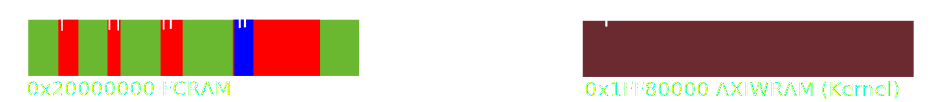
- On the other hand...
- It requires perfect timing.
if(mem_map(process, usr_vaddr, pages, paddr, access_rights)>>31) { // error ... } MemchunkHdr *current = memchunk; memchunk = memchunk->next; - We need a MemchunkHdr structure at the next ptr's address. 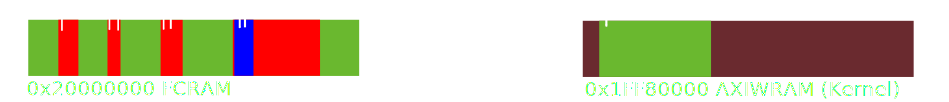
The KAddressArbiter oracle
- Actually used for Thread Synchronization.
- Tries to read from 'addr'.
- Returns an error if 'addr' is not user-accessible.
SVC 0x22: Result ArbitrateAddress(Handle arbiter, u32 addr, ...)
Data injection
Let's use the SlabHeap. Because...
- we can create KObjects easily.
- Set their member variables.
- Create a bunch of them.
SlabHeap
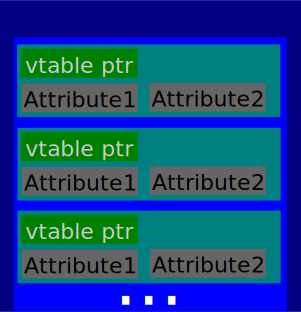Slap the Heap
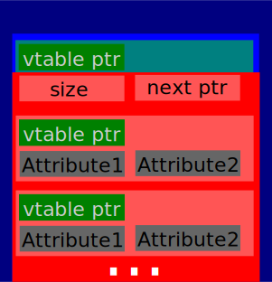...we can overwrite vtable pointers.
Summary
- 1. Setup some KObjects
- 2. Request Memory
- 3. Once that memory becomes available, patch the next-ptr.
- 4. Overwrite mapped SlabHeap pages.
- 5. Call svcCloseHandle to deallocate all KObjects.
ARM11 Code Execution
ARM9 Exploitation
ARM9
- Reusing the ARM9 for backwards compatibility for NDS as an IO bridge/security processor.
- Running a stripped down version of ARM11 kernel.
- No MMU (everything is identity-mapped).
- .data+stack is executable..
- .text is writable..
Exploiting ARM9
- There are three areas with memory-mapped IO:
-
- 0x10000000+: ARM9-only IO
- 0x10100000+: ARM9/ARM11 Shared IO
- 0x10200000+: ARM11-only IO
- We have full ARM11 control.
- Can we use the shared IO somehow to pwn ARM9?
NTRCARD
- The interface for reading DS cartridges lies in the shared IO region.
- A read operation starts by writing the CTRL register:
LDR R0, =0x10164000
...
LDR R2, =0x883F1FFF ; *NTRCARD_ROMCTRL = \
LSLS R1, R6, #0x1D ; 0x883F1FFF | ((R6&7)<<24);
LSRS R1, R1, #5
ADDS R1, R1, R2
STR R1, [R0,#4] ; This initiates a 0x200-byte transfer
NTRCARD
... and then a read loop:
...
loop: LDR R3, [R0,#4] ; do {
LSLS R3, R3, #8
BPL loop ; while(*NTRCARD_CTRL & ~READY);
LDR R0, [R0,#0x1C]
LSLS R3, R1, #2
ADDS R1, R1, #1
STR R0, [R2,R3] ; buf[i++] = *NTRCARD_IN;
LDR R0, =0x10164000 ; ^ No range check
LDR R3, [R0,#4]
CMP R3, #0
BLT loop ; } while(*NTRCARD_CTRL & BUSY);
...
Vulnerability
So to summarize:
- ARM9 asks for a 0x200 byte transfer.
- ARM11 overwrites the register, asking for 0x4000 bytes.
- ARM9 reads into a buffer until HW says it's finished.
- Boom!
ntrcardhax
We have a nice buffer overrun.
Can we control the data?
The data comes from the DS cartridge slot.
We need to make our own DS cartridge.

+
+
This gives us ARM9 code execution, but...
We want something better.
Chain of trust (Old3DS)
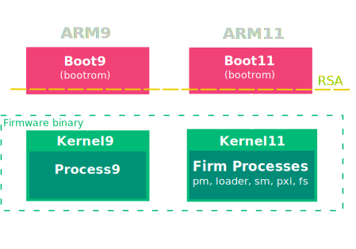Chain of trust (New3DS)
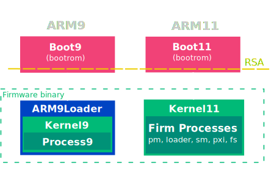arm9loader - Theory
- Additional crypto-layer introduced with New3DS.
- Loads new keys from a special NAND-sector.
- Keys are encrypted with a per-console key calculated based on OTP.
- OTP access is disabled forever after arm9loader.
- Looks safe.
arm9loader - Implementation
- Calculate SHA256 hash of OTP.
- Read the key-sector from NAND.
- Decrypt the first key using the OTP hash and put it in keyslot 0x11.
- Use the 0x11-key to generate a bunch of keys.
- Verify the 0x11-key by encrypting a fixed test-vector.
- Decrypt ARM9 binary. They forgot to "clear" keyslot 0x11 here.
- Jump to entrypoint.
Once we have ARM9 code-execution, we can just regenerate all keys by using keyslot 0x11.
arm9loader - Implementation 2.0
- Calculate SHA256 hash of OTP.
- Read the key-sector from NAND.
- Generate all the previous keys, for compatibility.
- Decrypt key #2 from NAND.
- Decrypt ARM9 binary using key #2.
- Clear keyslot 0x11.
- Jump to entrypoint.
EPIC FAIL
arm9loaderhax
We can change the key #2 in NAND.
arm9loader will decrypt the ARM9 binary to garbage..
.. and jump to it.
Infinite monkeys..
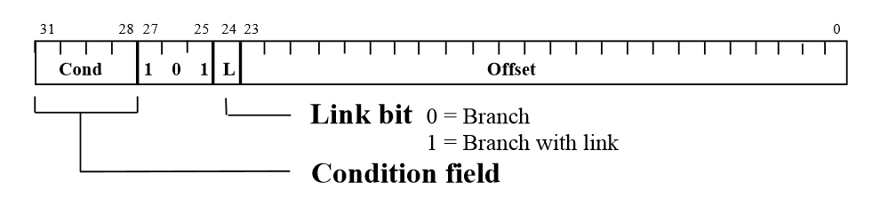If we try a lot of key #2's...
.. eventually we'll find some garbage that decodes to a branch-instruction.
We install our key #2 onto the NAND key sector.
We install the largest firm binary we have on firm0.
We put our payload on top of firm0.
ARM9 bootrom is executed.
Bootrom loads firm0 into arm9mem.
Bootrom decrypts it.
Bootrom hash-check fails.
Bootrom loads (smaller) firm1 on top.
Bootrom decrypts it.
Since firm1 is valid, bootrom will jump to it.
arm9loader will decrypt using our supplied key.
arm9loader jumps to garbage.
garbage jumps to our code.
Summary
This gives us:ARM9 code-execution.. ✓
.. from cold boot ✓
.. early. ✓
Gives us 6.x save-key and 7.x NCCH-key.✓
AES Engine
AES Engine
- The ARM9 has a hardware AES crypto engine, used a lot.
- Two security features:
Write-only keys: A key written to a keyslot cannot be read back
Keyscrambler: The actual key used is calculated in hardware and never exposed to the CPU
Keyscrambler
- Two 128-bit keys called keyX and keyY.
- The actual AES key is derived as follows:
normal_key = F(keyX, keyY)
F is an unknown function implemented in hardware.Poking
-
By poking the AES engine, we notice:
encrypt(zeroes, keyX=1 << n, keyY=0)
==
encrypt(zeroes, keyX=0, keyY=1 << (n+2)) -
In general, we find that we can write:
F(x, y) = G( (x <<< 2) ^ y )
whereG(t)is an unknown function implemented in hardware.
- And then we got stuck..
Wait a minute..
- The keyscrambler is used for (among other things):
- Mii QR-codes
- UDS network protocol
- 3DS Download Play
- Wii U also supports all these, but it doesn't have the keyscrambler..
- The Wii U must be using normal keys..
Keys shared between
Wii U <-> 3DS
- We can't read any keys set by the bootrom.
| Name | Keyslot | KeyX set by | KeyY set by |
| UDS | 0x2D | Bootrom | Bootrom |
| Mii QR-codes | 0x31 | Bootrom | Firmware |
| DLP | 0x39 | Bootrom | Firmware |
Can we figure out G(t)?
- Thanks shuffle2 (and team fail0verflow) for helping us extract the Wii U keys!
-
We now have a keyY and its corresponding normal key
(keyX still unknown). - If G(t) is "bad", then a small change in keyY will only lead to a small change in the normal key.
- Spoiler: G(t) is "bad"
Staring at the data
- One bit in keyY is flipped => One or two bits in the normal key are flipped at a position moved left by 87 or 88, but never 86.
- Looks like an adder maybe?
- Let's try
G(t) = (t + C) <<< 87, then: - We don't know keyX because it's set by bootrom.
- We don't know the constant
Cbecause it's set in silicon.
F(x, y) = (((x <<< 2) ^ y) + C) <<< 87
Bit by bit..
- We take our formula:
- .. and consider the inequality:
- If y0 and y1 are equal except one bit, the XOR is smallest for the y which has the same bit as x.
normal_key = (((x <<< 2) ^ y) + C) <<< 87
(normal_key0 >>> 87) < (normal_key1 >>> 87)
((x <<< 2) ^ y0) + C < ((x <<< 2) ^ y1) + C
(x <<< 2) ^ y0 < (x <<< 2) ^ y1
Solving for keyX and C
- Perform the calculation for all 128 keyY bitflips, and you have recovered all 128 bits of keyX.
- When you know keyX, you can calculate
C. - End result:
- Keyscrambler broken ✓
- Bootrom keyX for keyslots 0x30-0x33, 0x38-0x3B ✓
NFC Fail
- Firmware version 8.1 was rushed for the upcoming New3DS release.
- It included an early version of NFC crypto, later replaced.
- Firmware 8.1+ uses an AES normal key.
- Firmware 9.3+ uses an hardcoded keyY.
- They accidentally gave us a (keyY, normal key) pair in their firmware images..
Takeaways
- Giving access to physical memory is dangerous, even if you think you've protected the sensitive stuff
- Shared IO is dangerous
- Only checking your data before decryption is a bad idea
- Secrets hidden in hardware are great, unless you leak them
- fail0verflow at 30c3
We disagree.
There's still a lot to do
- ctrulib and assorted tools are maturing nicely, but could always use help
- Developers, developers, developers
- Making games is fun !
- Reverse engineering proprietary hardware is fun !
- Reverse engineering proprietary software is fun !
One more thing...
Thanks to yellows8
Thanks to everyone on #3dsdev
@derrekr6, @qlutoo, @smealum3dbrew.org
smealum.github.io/3ds
Questions ?
@derrekr6, @qlutoo, @smealum3dbrew.org
smealum.github.io/3ds